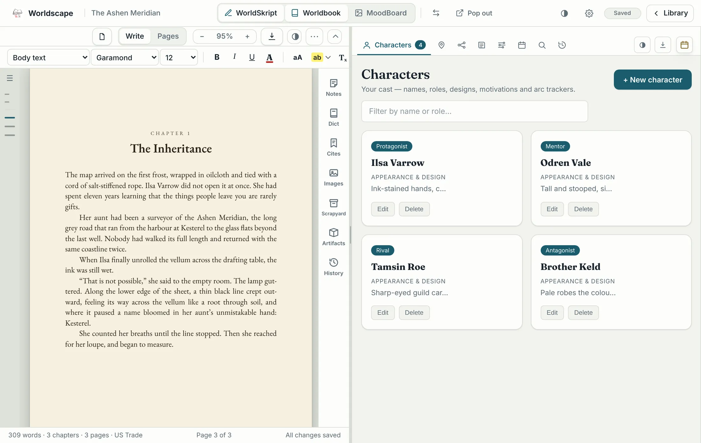
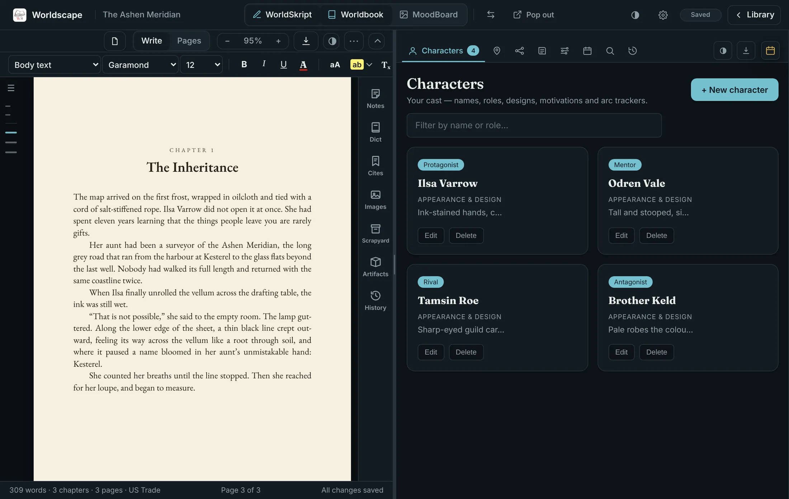
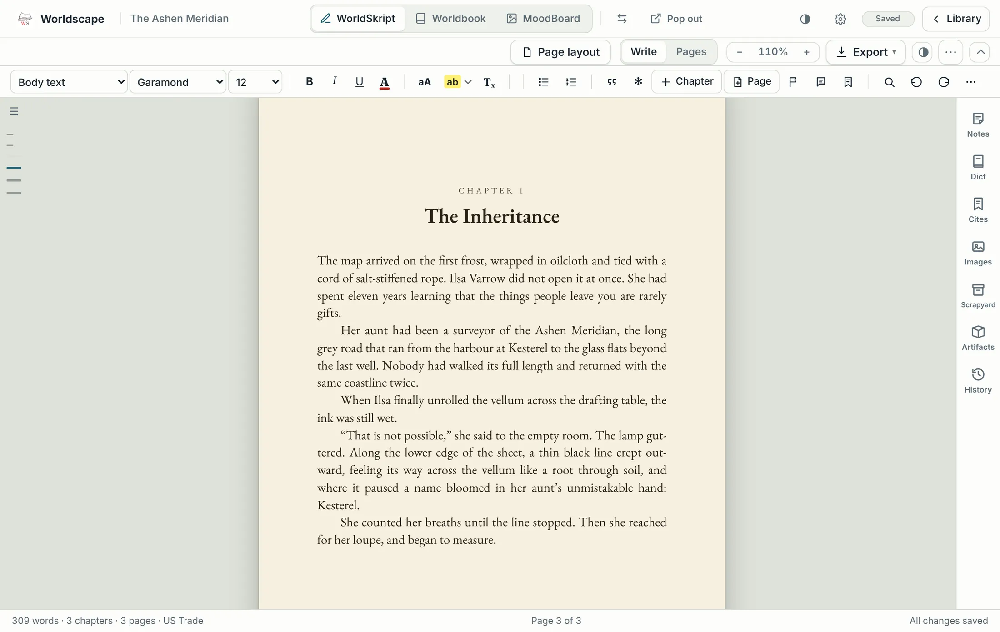
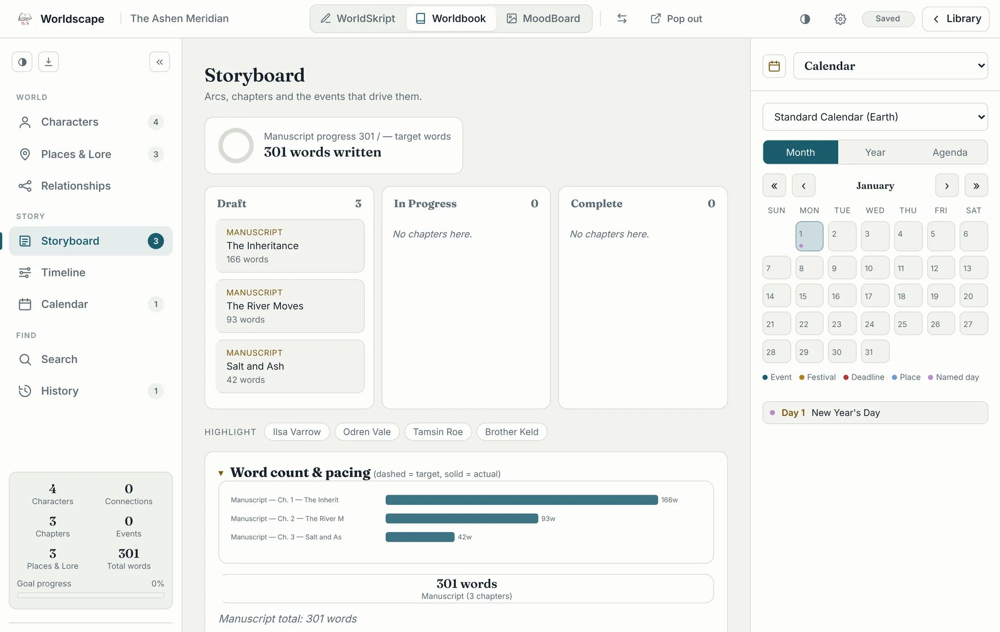
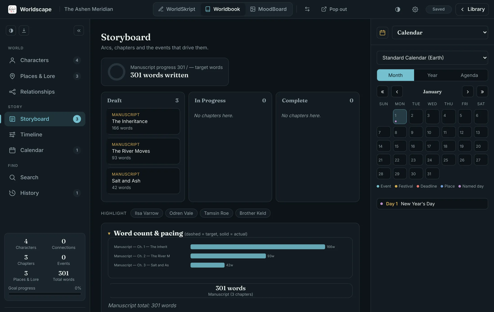
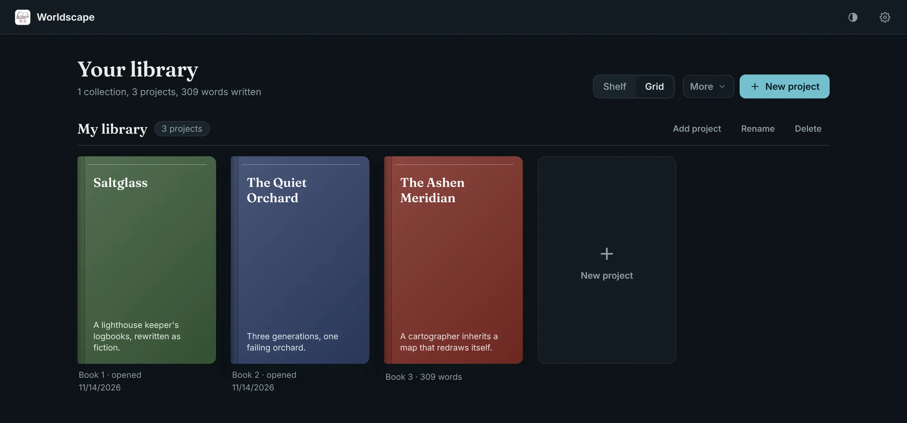

WorldSkript
A manuscript editor with real pages, chapters, a Scrapyard for scenes you’re not ready to cut, and history for every chapter.
Desktop app for Windows, macOS and Linux
Worldscape keeps your manuscript, story notes and mood boards in a single project, side by side. It works offline, and your files stay on your computer.


What’s inside
Open a project and you land in Write and Plan together. Pick any two of the three tools to work side by side, or give one the whole window.
A manuscript editor with real pages, chapters, a Scrapyard for scenes you’re not ready to cut, and history for every chapter.
Characters, places and lore, relationships, a storyboard, a timeline and calendars, all linked to the chapters you write.
A free canvas for pictures, notes and colour swatches. Start a board for any character or place, or keep it independent.
Write
WorldSkript lays your text out on real pages at the trim size you choose, so you see how the book will read while you write it.


Plan
Write a chapter and it appears on the Worldbook storyboard with its word count. Rename it, reorder it or set it aside in either tool and the other follows.


Organise
Keep your projects on a shelf or in a grid, and gather the books of a series into a collection. Each project is a folder you choose, on your own disk, so your work is never locked inside the app.


Free to download, and it works offline. Windows, macOS and Linux installers are ready, and the app updates itself when you choose.
Get Worldscape